전파전자통신기사 (2017-03-04 기출문제)
1과목: 디지털전자회로
1. 전원 주파수 60[Hz]를 사용하는 정류회로에서 120[Hz]의 맥동 주파수를 나타내는 정류방식은?
- 단상 반파 정류
- 단상 전파 정류
- 3상 반파 정류
- 3상 전파 정류
(정답률: 83%)

2. 다음과 같은 정전압 회로에서 입력전압 Vin이 15[V]∼18[V]의 범위로 변동하는 경우 제너다이오드 전류 ID의 변화는 얼마인가? (단, RL=1[kΩ], VL=10[V]이다.)
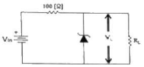
- 20∼50[mA]
- 30∼60[mA]
- 40∼60[mA]
- 40∼70[mA]
(정답률: 67%)
3. 다음 중 공통 이미터(CE) 증폭기회로에 대한 설명으로 옳은 것은?
- 출력신호는 입력신호와 위상이 같다.
- 출력신호는 입력신호와 위상이 다르다.
- 출력신호는 입력신호에 비해 작다.
- 출력신호는 입력신호와 크기가 같다.
(정답률: 70%)
4. 그림과 같은 부궤환 증폭기의 폐루프(Closed-Loop) 차단주파수는? (단, 개루프(Open Loop)일 때, 이득-대역폭 곱은 1×105[Hz]이다.)
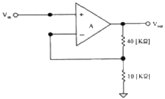
- 200[kHz]
- 100[kHz]
- 50[kHz]
- 10[kHz]
(정답률: 58%)
5. 다음 중 차동증폭기의 동상신호제거비(Common-Mode Rejection Radio)에 대한 설명으로 틀린 것은?
- 동상신호제거비가 작을수록 간섭신호 제거 특성이 좋다.
- 개루프 전압이득이 100,000이고 공통-모드 이득이 0.2인 연산증폭기의 공통신호제거비는 500,000이다.
- 동상신호제거비는 동상신호를 제거할 수 있는 성능척도이다.
- 입력 동상신호에 대한 오차를 나타내는 성능척도이다.
(정답률: 57%)
6. 다음 중 푸시 풀(Push-Pull)증폭기에서 출력파형의 찌그러짐이 작아지는 이유는?
- 기수고조파가 상쇄되기 때문이다.
- 우수고조파가 상쇄되기 때문이다.
- 기수차 및 우수차 고조파가 상쇄되기 때문이다.
- 직류성분이 없어지기 때문이다.
(정답률: 74%)
7. 발진회로에서 발진을 지속하기 위해 필요한 과정은?
- 출력신호의 일부분을 부궤환시킨다.
- 출력신호의 일부분을 정궤환시킨다.
- 외부로부터 지속적으로 전원과 입력신호를 제공한다.
- L과 C성분을 제거한다.
(정답률: 83%)
8. 하틀리 발진회로에서 커패시턴스 C=200[pF], 인덕턴스 L1=180[μH], L2=20[μH] 및 상호인덕턴스 M=90[μH]의 값을 가질 떄 발진주파수는 약 얼마인가?
- 517[kHz]
- 537[kHz]
- 557[kHz]
- 577[kHz]
(정답률: 71%)
9. 다음 중 주파수변조(FM)에서 신호대 잡음비(S/N)를 개선하기 위한 방법으로 틀린 것은?
- 디엠파시스(De-Emphasas) 회로를 사용한다.
- 잡음지수가 낮은 부품을 사용한다.
- 변조지수를 크게 한다.
- 증폭도를 크게 높인다.
(정답률: 67%)
10. 다음 중 FM에 대한 특징으로 틀린 것은?
- 단파 대역에 적당하지 않다.
- 수신의 충실도를 향상시킬 수 있다.
- 잡음을 보다 감소시킬 수 있다.
- 피변조파의 점유주파수대역이 좁아진다.
(정답률: 65%)
11. QAM 변조방식은 디지털 신호의 전송 효율향상, 대역폭의 효율적 이용, 낮은 에러율, 변조의 용이성을 위해 어떤 변조 방식을 결합한 것인가?
- FSK+PSK
- ASK+PSK
- ASK+FSK
- QPSK+FSK
(정답률: 69%)
12. 정보 전송에서 800[Baud]의 변조 속도로 4상 차분 위상 변조된 데이터 신호 속도는 얼마인가?
- 600[bps]
- 1,200[bps]
- 1,600[bps]
- 3,200[bps]
(정답률: 50%)
13. 다음 중 높은 주파수 성분에 공진하기 때문에 생기는 펄스 상승부분의 진동 정도를 무엇이라 하는가?
- 새그(Sag)
- 링킹(Ringing)
- 언더슈트(Undershoot)
- 오버슈트(Overshoot)
(정답률: 86%)
14. 멀티바이브레이터의 단안정, 무안정, 쌍안정의 동작은 어떻게 결정되는가?
- 전원 전압의 크기
- 바이어스 전압의 크기
- 전원 전류의 크기
- 결합 회로의 구성
(정답률: 75%)
15. 숫자 0에서 9까지를 나타내기 위해 BCD 코드는 몇 비트가 필요한가?
- 4
- 3
- 2
- 1
(정답률: 77%)
16. 다음 중 드모르간(De Morgan)의 정리를 옳게 나타낸 것은?
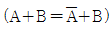
- A+B=A·B
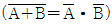
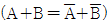
(정답률: 65%)
17. 다음 중 Master-Slave 플립플롭은 어떤 현상을 해결하기 위해 사용되는가?
- Race 현상
- Toggle 현상
- 펄스 지연 현상
- 반전 현상
(정답률: 74%)
18. 다음 중 동기식 카운터와 비동기식 카운터를 설명한 것으로 옳은 것은?
- 동기식 카운터를 직렬형, 비동기식 카운터를 병렬형 카운터라고도 한다.
- 같은 수의 플립플롭을 갖는 경우 비동기식 카운터보다 동기식 카운터가 더 높은 입력 주파수를 사용하는 곳에 이용된다.
- 비동기식 카운터는 동기식 카운터와는 달리 시간 지연이 누적되지 않는다.
- 비동기식 카운터는 동기식 카운터보다 더 많은 회로 소자가 필요하다.
(정답률: 72%)
19. 다음 중 디코더(Decoder)에 대한 설명으로 틀린 것은?
- 출력보다 많은 입력을 갖고 있다.
- 한번에 하나의 동작을 수행한다.
- N 비트의 2진 코드 입력에 의해 최대 2N개의 출력이 나온다.
- 인코더(Encoder)의 역기능을 수행한다.
(정답률: 72%)
20. 다음 중 전가산기(Full Adder)의 구성으로 옳은 것은?
- 1개의 반가산기와 1개의 OR 게이트
- 1개의 반가산기와 1개의 AND 게이트
- 2개의 반가산기와 1개의 OR 게이트
- 2개의 반가산기와 1개의 AND 게이트
(정답률: 77%)
2과목: 무선통신기기
21. 다음 중 AM 수퍼헤테로다인 수신기의 선택도를 높이는 방법으로 잘못된 것은?
- 증폭단간의 전자결합을 밀결합한다.
- 동조코일의 Q를 높인다.
- 중간주파수를 낮춘다.
- 고주파 증폭단수를 증가한다.
(정답률: 65%)
22. 정현파 신호로 변조된 AM파의 측정시 최대진폭(Vmax)이 20[V]이고 최저진폭(Vmin)이 5[V]일 때 변조도(m)는 얼마인가?
- 0.9
- 0.8
- 0.6
- 0.4
(정답률: 62%)
23. AM파가 VAM=(100+60cos500πt)cos14×105πt로 표시될 때 변조도(m)은 얼마인가?
- 0.6
- 0.5
- 0.38
- 0.25
(정답률: 50%)
24. 변조도가 1인 DSB파를 제곱 검파하면 왜율은 약 몇 [%]인가?
- 10[%]
- 20[%]
- 25[%]
- 35[%]
(정답률: 63%)
25. 다음 중 다중 반송파 변조(Multicarrire Modulation)에 대한 설명으로 틀린 것은?
- 전체 대역폭을 작은 대역폭을 갖는 부채널로 분할한다.
- 등화기를 사용하여 채널의 왜곡을 보상한다.
- FFT를 이용하여 고속 구현이 가능하다.
- 전송 신호의 크기가 일정하여 전력 효율이 높다.
(정답률: 54%)
26. GPS 측정오차로 보기 어려운 것은?
- GPS 위성 송신 코드 오류로 인한 오차
- 위성과 수신기간 측정된 거리 오차
- 전리층과 대류권 통과시 전파 지연 오차
- 수신기의 전파적 잡음으로 인한 오차
(정답률: 74%)
27. 위성방송 TV수신용 안테나와 가장 거리가 먼 것은?
- 파라블라안테나
- 야기(Yagi) 안테나
- 패치 어레이(Patch array) 안테나
- 오프 세트(Off set) 안테나
(정답률: 73%)
28. PN(Pseudo Noise) 코드가 (1 1 1 0 1 0 0)이고, 자기 상관 계열의 지연 수(k)가 0일 때 자기 상관 함수값은 얼마인가?
- +1
- -1
- +1/7
- -1/7
(정답률: 38%)
29. 다음 GMDSS(Global Maritime Distress and Safety System) 시스템 중 해안지구국과 직접 통신하는 것은?
- VHF 무선전화
- Inmarsat 위성
- MF DSC
- HF 무선텔렉스
(정답률: 69%)
30. 다음 중 GMDSS 설비로 406[MHz] 주파수를 사용하는 것은?
- VHF DSC
- NAVTEX
- Inmarsat-C
- COSPAS-SARSAT EPIRB
(정답률: 71%)
31. 다음 중 HF DSC를 이용한 조난경보 수신 메시지 구성에 대한 설명으로 틀린 것은?
- J3E : 무선전화로 통화를 원한다.
- 12,290.0[kHz] : 무선전화 조난주파수로 통화를 원한다.
- Fire : 선박에 화재가 나있다.
- A3E : 무선 텔렉스로 통신하기를 원한다.
(정답률: 65%)
32. 다음 중 디지털 선택 호출 장치를 이용한 조난경보 전송에 대한 설명으로 옳지 않은 것은?
- 조난경보의 시작 및 중단이 항상 가능할 것
- 조난경보는 전용 조난버튼을 사용하여야만 송출할 수 있을 것
- 조난의 경우에 조난경보를 자동으로 3회 반복하여 송신할 것
- 조난경보를 쉽게 송출할 수 있고 오조작에 의한 송출을 방지하는 장치가 있을 것
(정답률: 77%)
33. 축전지 음량 산출에서 허용최저전압(V/Cell)을 구하는 식으로 옳은 것은? (단, V: 허용최저전압(V/Cell), Va: 부하의 허용최저전압, Vc: 축전지와 부하간의 접속 선의 총 전압강하, n: 직렬 접속된 셀 수)
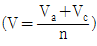
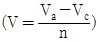
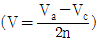
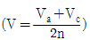
(정답률: 40%)
34. 다음 설명은 무정전 전원장치(Uninterruptible Power Supply: UPS)의 어떤 구동 방식에 해당하는 것인가?
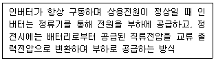
- CVCF(Constant Voitage Constant Frequency)
- ON-LINE
- OFF-LINE
- LINE INTERACTIVE
(정답률: 69%)
35. 무정전 전원장치(Uninterruptible Power Supply: UPS)의 동작원리를 나타내는 다음 [그림]에서 (A)에 들어갈 장치로 적합한 것은?
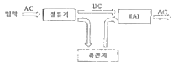
- 필터
- 인버터
- 컨버터
- 스위치
(정답률: 71%)
36. 오실로스코프로 전압을 측정한 결과 그림과 같은 파형을 얻었다. 실효값은 몇 [V]인가? (단, 오실로스코프의 편향감도는 b[mm/V]이다.)
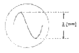
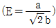
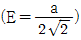
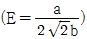
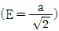
(정답률: 50%)
37. 다음 중 AM 및 FM수신기에서 공통적인 종합 특성 측정으로 맞는 것은?
- 안정도와 충실도의 측정
- 감도와 충실도의 측정
- 감도와 안정도의 측정
- 혼변조와 선택도의 측정
(정답률: 48%)
38. 안테나 성능 측정 시 원역장(Far Field) 조건을 만족하는 계산식은? (단, D: 피측정 안테나 최대 직경, λ: 파장)
- 측정거리=D2/λ
- 측정거리=2D2/λ
- 측정거리=3D2/λ
- 측정거리=4D2/λ
(정답률: 73%)
39. 급전선의 임피던스가 75[Ω]인 안테나에 특성 임피던스 50[Ω]인 급전선을 연결 시 반사계수는 얼마인가?
- 0.1
- 0.2
- 0.3
- 0.4
(정답률: 57%)
40. 전압 정재파비가 3인 급전선에서 진행파 전압이 10[V]라면 반사파 전압은 몇 [V]인가?(오류 신고가 접수된 문제입니다. 반드시 정답과 해설을 확인하시기 바랍니다.)
- 3[V]
- 3.3[V]
- 5[V]
- 15[V]
(정답률: 32%)
3과목: 안테나공학
41. 다음 중 전자파를 이루는 전계와 자계의 관계를 설명한 것으로 틀린 것은?
- 전자파는 전계와 자계의 2가지 성분으로 이루어진다.
- 전자와 자계는 시간적으로는 역위상이다.
- 전계와 자계는 공간적으로는 서로 직각이다.
- 전자파는 전계와 자계가 항상 같이 존재한다.
(정답률: 58%)
42. 다음 중 전파에 대한 설명으로 옳지 않은 것은?
- 전파는 종파이다.
- 전파는 편파성을 가진다.
- 전파는 회절성을 가진다.
- 인공적인 유도없이 공간을 전파하는 3,000[GHz] 이하 주파수의 전자파를 말한다.
(정답률: 77%)
43. 다음의 전계에 관한 파동 방정식 중 Ez 성분을 나타낸 것으로 옳은 것은?
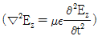
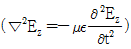
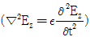
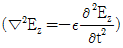
(정답률: 45%)
44. 단위 시간에 단위 면적을 통과하는 전자 에너지를 전략밀도라 하며, 전계의 실효치를 E[V/m], 자계의 실효치를 H[A/m], 자유공간의 특성 임피던스를 Z0[Ω]이라고 할 때, 자유공간에서의 전력밀도[W/m2]를 나타내는 식으로 틀린 것은?
- E×H
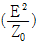
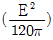
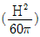
(정답률: 57%)
45. 비동조 급전선의 종류와 그 특징을 바르게 짝지은 것은? (순서대로 종류, 특징)
- 도파관, 급전선상에 진행파만 존재한다.
- 도파관, 정합장치가 불필요하다.
- 동축케이블, 급전선의 길이와 파장은 일정한 관계가 있다.
- 동축케이블, 외부로부터 전자유도의 방해가 많다.
(정답률: 40%)
46. 다음 중 동조 급전선과 비동조 급전선에 대한 설명으로 틀린 것은?
- 급전선의 길이가 길 때는 동조 급전선, 길이가 짧을 때는 비동조 급전선을 사용한다.
- 비동조 급전선은 동조 급전선보다 전력 손실이 적다.
- 동조 급전선은 정합장치가 불필요하고 비동조 급전선은 필요하다.
- 전송 효율은 급전선의 길이가 길어지면 동조 급전선이 비동조 급전선보다 나쁘다.
(정답률: 48%)
47. 동축급전선을 개방하고 임피던스를 측정하였을 때 100[Ω]이고, 단락했을 때의 임피던스가 25[Ω]이라면 이 급전선의 특성임피던스는 얼마인가?
- 100[Ω]
- 75[Ω]
- 50[Ω]
- 25[Ω]
(정답률: 65%)
48. 도파관의 내부에 전자파가 발생하도록 도파관을 여진시키는 방법이 아닌 것은?
- 다이폴 여진법(dipole coupling)
- 루프 여진법(loop coupling)
- 개구면 여진법(aperture coupling)
- 공동 여진법(cavity coupling)
(정답률: 36%)
49. 복사전력이 100[W]인 어떤 안테나로부터 최대복사방향 P점의 전계강도는 500[μV/m]이다. 또 같은 송신점에 복사전력 400[W]인 반파장안테나를 세웠을 때 P점의 전계강도가 100[μV/m]이었다. 피측정안테나의 이득은 약 얼마인가?
- 20[dB]
- 23[dB]
- 30[dB]
- 41[dB]
(정답률: 45%)
50. 안테나의 복사 저항이 25[Ω]이고 손실 저항이 5[Ω]일 때 이 안테나의 복사 효율은 약 얼마인가?
- 16[%]
- 20[%]
- 30[%]
- 83[%]
(정답률: 43%)
51. 수직 다이폴 안테나의 수평면내 지향성이 무지향성을 유지하면서 이득을 얻기 위해서는 어떻게 하여야 하는가?
- 반사기와 도파기를 사용한다.
- 수직으로 적립하여 콜리니어 안테나 형식으로 만든다.
- 수평으로 적립하여 브로드 사이드 어레이형으로 만든다.
- 직각으로 배치하고 90° 위상차 급전을 한다.
(정답률: 45%)
52. 장·중파 통신의 특징이 아닌 것은?
- 광대역성을 얻기 어렵다.
- 복사효율과 이득이 높다.
- 수직편파 특성을 갖는다.
- 방사상 접지방식을 사용한다.
(정답률: 40%)
53. 제펄린 안테나의 특징이 아닌 것은?
- 공간적으로 반파장 더블렛의 설치가 곤란한 경우에 사용한다.
- 전압급전방식이다.
- 진행파형 안테나이다.
- 평형형 동조급전선을 이용한다.
(정답률: 40%)
54. 다음 방식 중 원편파를 발생할 수 없는 것은?
- 전자나팔에 원편파 변환기를 사용한다.
- 원추형 전자나팔에 렌즈형 안테나를 사용한다.
- 엔드 파이어 헤리컬(End fire helical) 안테나를 사용한다.
- 직교 다이폴 안테나에 90°의 위상차를 두어 급전한다.
(정답률: 50%)
55. 극초단파 통신에서 주로 사용하는 전파방식은?
- 가시거리의 직접파
- 지표파
- 대지 반사파
- 진리층 반사파
(정답률: 62%)
56. 다음 중 전자파 투시도에 관한 설명으로 옳지 않은 것은?
- 전파통로를 나타내는 지형단면파이다.
- 통가 지구반경계수를 고려해서 작성한다.
- 전파통로 상에서 수직방향의 장애물을 살펴볼 때 편리하다.
- 대기의 굴절률이 수평방향으로만 변화한다고 가정한다.
(정답률: 67%)
57. 대지반사파에서 자계가 입사평면에 평행하게 경계면에 입사하는 경우 이는 무슨 편파인가?
- 수직편파
- 평행편파
- 원편파
- 타원편파
(정답률: 53%)
58. 다음 중 장파와 중파에 의한 전파(Propagation)에서 가장 감쇠가 큰 매질은?
- 해수면
- 담수면
- 평야
- 마른땅 위
(정답률: 50%)
59. E층의 임계주파수가 4[MHz]일 때 송수신소간 400[km]지점에서 E층 반사로 전파하는데 가장 안정하게 통신할 수 있는 최적 사용주파수(FOT)는 약 얼마인가? (단, E층 높이는 100[km]이다.)
- 6.8[MHz]
- 7.6[MHz]
- 8.5[MHz]
- 13.6[MHz]
(정답률: 42%)
60. 위성통신장치는 송·수신기가 한 시스템 내에 설치되어 있으나 송수신할 때 동일한 주파수를 사용하지 않는다. 그 이유로 가장 타당한 것은?
- 강한 송신전력이 수신기에 영향을 미치기 때문에
- 송신안테나의 이득이 비교적 낮기 때문에
- 송수신안테나가 일체형으로 하나 밖에 없기 때문에
- 지상에서 발사된 전파가 위성에 도달하는 동안 세력이 약해지므로
(정답률: 67%)
4과목: 통신영어 및 교통지리
61. Choose the mostsuitable word to fill the blank.
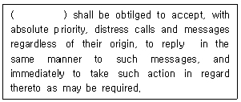
- Members
- Radio stations
- Ships
- States
(정답률: 57%)
62. Choose the wrong Korean version for the underlined parts.
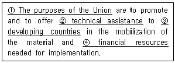
- 연합의 목적
- 기술 지원
- 발달된 국가
- 재정 자원
(정답률: 65%)
63. Who shall perform the duties of the secretary-General in the absence of the Union?
- the staff of the Union
- the Director of the ITU-R
- the Deputy secretary-Greneral
- the vice-chairman of the RRB
(정답률: 65%)
64. What kinds of time shall be used for every station of the maritime mobils service?
- Greenwich Mean Time
- Local Standard Time
- Coordinated Universal Time
- International Standard Time
(정답률: 67%)
65. Choose the correct term that has the meaning of the following sentence.
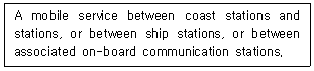
- maritime mobile service
- coast station service
- mobile station service
- inter-mobile service
(정답률: 62%)
66. 괄호 안에 들어갈 가장 적절한 단어 또는 어휘는 무엇인가?
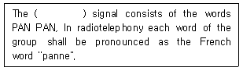
- Distress
- Urgency
- Rescue
- Safety
(정답률: 73%)
67. Choose the suitable one in the blanks and complete the following sentence.
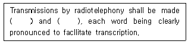
- slowly, distinctly
- fast, distinctly
- exactly, slowly
- moderately, slowly
(정답률: 59%)
68. Choose the correct one which describes GMDSS.
- General Maritime Distress Service System
- Global Maritime Distress and Safely System
- General Mobile Distress Service System
- General Mobile Distress and Safely System
(정답률: 64%)
69. Which is the Organization to continue its studies of the GMDSS?
- IMO
- MMO
- ITU-R
- ITU-T
(정답률: 67%)
70. What do we call the following phase in Korean?
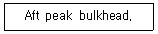
- 선수격벽
- 선미격벽
- 좌현격벽
- 우현격벽
(정답률: 69%)
71. Choose the wrong meaning of each underlined parts of the following sentence.
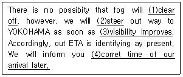
- (1)은 “개원 가능성이 없다”의 뜻이다.
- (2)는 “항해하다”의 뜻이다.
- (3)은 “부근이 조용해지면”의 뜻이다.
- (4)는 “추후 본선의 정확한 도착시간”의 뜻이다.
(정답률: 62%)
72. 다음 문장의 의미로 옳은 것은?(오류 신고가 접수된 문제입니다. 반드시 정답과 해설을 확인하시기 바랍니다.)
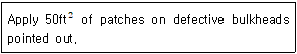
- 요청한 대로 손상된 선수에 50ft2의 동판을 덧붙일 것
- 표시된 대로 손상된 격벽에 50ft2의 철판을 덧붙일 것
- 표시된 대로 구멍난 격벽에 50ft2의 철판을 용접할 것
- 요청한 대로 손상된 선미에 50ft2의 철판을 용접할 것
(정답률: 27%)
73. 다음 중 OCEAN ROUTE에 대한 설명으로 맞지 않는 것은?
- 통보의 유료어수에 따라 전보요금을 지불한다.
- 반드시 OCEAN ROUTE에 따라서 항해해야 한다.
- 선박의 안전운항과 경제적 운항을 할 수 있도록 항로를 추천한다.
- 대양을 항해하는 선박이 출항 전후에 OCEAN ROUTE에 지정사항을 통보한다.
(정답률: 59%)
74. 다음 중 The great Lakes에 포함되지 않는 것은?
- Orinoco
- Superior
- Michigan
- Huron
(정답률: 75%)
75. AFRICA의 INDIAN OCEAN 연안에 위치해 있는 도시가 아닌 것은?
- LUANDA
- MOMBASA
- DURBAN
- MOZAMBIQUE
(정답률: 48%)
76. 다음 해협 중 일본의 연근해 해역에 위치해 있지 않는 것은?
- Kill Strait
- Tsugaru Strait
- Bungo Strait
- Sunda Strait
(정답률: 75%)
77. 다음 중 세계 주요 항구명으로 소재국이 틀린 것은?
- Rotterdam은 Netherlands에 있다.
- Antwerp는 Belgium에 있다.
- Liverpool은 Portugal에 있다.
- Montevideo는 Uruguay에 있다.
(정답률: 67%)
78. 다음 중 한랭전선의 설명으로 맞지 않는 것은?
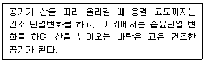
- 한기가 우세하여 난기 밑을 파고들면서 진행하는 전선이다.
- 기온이 하강하고 돌풍이나 소나기가 따른다.
- 전선의 경사가 비교적 급하여 날씨의 회복이 빠르다.
- 지속적인 강우를 보인다.
(정답률: 40%)
79. 인도의 벵갈만에서 발생하는 열대성 저기압을 무엇이라 부르는가?
- Cyclone
- Typhoon
- Hurricare
- Willy Willy
(정답률: 69%)
80. 다음은 어떤 기상현상을 설명한 것인가?
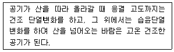
- 해륙풍
- 무역풍
- 푀엔 현상
- 계절풍
(정답률: 65%)
5과목: 전파관계법규
81. 다음 중 전파법의 목적이 아닌 것은?
- 전파의 효율적인 이용 및 관리
- 전파 관련분야의 진흥과 공공복리의 증진에 이바지
- 전파이용과 전파에 관한 기술의 개발 촉진
- 새로운 전파자원의 개발
(정답률: 72%)
82. 다음 중 실효복사전력에 대한 설명으로 맞는 것은?
- 안테나공급전력에 주어진 방향에서의 반파다이폴의 상대이득을 곱한 것
- 안테나공급전력에 주어진 방향에서의 반파다이폴의 절대이득을 곱한 것
- 안테나공급전력에 주어진 방향에서의 다이폴의 상대이득을 곱한 것
- 안테나공급전력에 주어진 방향에서의 다이폴의 절대이득을 곱한 것
(정답률: 50%)
83. 방송을 양호하게 수신할 수 있는 구역으로서 전계강도가 미래창조과학부장관이 정하여 고시하는 기준 이상인 구역은?
- 양청구역
- 방송구역
- 블랭킷에어리어
- 방송양호구역
(정답률: 50%)
84. 무선국 또는 물체의 방향을 결정하기 위하여 전파를 수신하는 무선측위는?
- 방향무선탐지
- 무선탐지방향
- 무선항행
- 무선방향탐지
(정답률: 67%)
85. 다음 중 무선국 개설허가의 유효기간이 3년인 것은?
- 공동체라디오 방송국
- 항공국
- 실험국 및 실용화시험국
- 우주국
(정답률: 44%)
86. 다음 중 선박이 입항중인 때에 해당 선박에 개설된 선박국을 운용할 수 없는 경우는?
- 무선국의 검사에 필요한 경우
- 26,100[kHz] 미만의 주파수에 전파(무선전화에 한한다)에 의하여 통신을 하는 경우
- 선박의 안전을 도모하기 위하여 선박에 설치된 무선항행용 레이다의 운용을 필요로 하는 경우
- 무선통신에 의하지 아니하고는 따로 육상과의 연락수단이 없는 경우로서 긴급한 통보를 해안국에 송신하는 경우
(정답률: 47%)
87. 지정된 안테나공급전력이 500와트인 방송국(초단파 방송 또는 텔레비전 방송국 및 위성방송보조국을 제외한다)의 안테나공급전력의 허용범위는?
- 425∼525[W]
- 425∼550[W]
- 450∼525[W]
- 450∼550[W]
(정답률: 44%)
88. 다음 중 필요주파수대폭이 잘못 표시된 것은?
- 0.002[Hz]=H002
- 400[Hz]=4H00
- 2.4[kHz]=2K40
- 10[MHz]=10M0
(정답률: 63%)
89. 다음 중 전자파 인체보호기준 등에 대한 설명으로 틀린 것은?
- 미래창조과학부장관은 무선설비 등에서 발생하는 전자파가 인체에 미치는 영향을 고려하여 전자파인체보호기준을 정하여 고시하여야 한다.
- 미래창조과학부장관은 무선설비 등에서 발생하는 전자파가 인체에 미치는 영향을 고려하여 전자파강도측정기준을 정하여 고시하여야 한다.
- 미래창조과학부장관은 무선설비 등에서 발생하는 전자파가 인체에 미치는 영향을 고려하여 전자파반사인증기준을 정하여 고시하여야 한다.
- 미래창조과학부장관은 무선설비 등에서 발생하는 전자파가 인체에 미치는 영향을 고려하여 전자파흡수율측정기준을 정하여 고시하여야 한다.
(정답률: 56%)
90. 다음 중 무선국 시설자인 법인이나 개인에 대하여 양벌죄가 적용되는 것은?
- 운용이 정지된 무선국을 운용할 경우
- 조난통신의 취급을 방해한 경우
- 무선통신 기능에 장해를 주어 무선통신을 방해한 자
- 조난이 없음에도 무선설비로 조난통신을 한 자
(정답률: 39%)
91. 다음 중 청문을 하여야 할 사유가 아닌 것은?
- 주파수회수 또는 주파수재배치
- 개설 신고한 무선국의 준공
- 무선국 개설허가의 취소
- 주파수한당의 취소
(정답률: 60%)
92. ITU의 전권위원회는 회원국을 대표하는 대표단으로 구성되어 몇 년마다 개최되는가?
- 1년
- 3년
- 4년
- 6년
(정답률: 67%)
93. 다음 중 ITU 조정위원회의 구성원이 아닌 것은?(오류 신고가 접수된 문제입니다. 반드시 정답과 해설을 확인하시기 바랍니다.)
- 사무총장
- 부사무총장
- 3명의 국장
- 자문위원
(정답률: 65%)
94. 다음 중 ITU 전권위원회가 행하는 임무가 아닌 것은?
- ITU의 전략적 정책 및 계획을 준비
- ITU의 회계계산서 검토 및 최종 승인
- 이사회를 구성할 연합의 회원국을 선출
- ITU의 목적을 달성하기 위한 전반적인 정책의 결정
(정답률: 40%)
95. 세계전파통신회의(WRC)의 주요 의제의 범위가 아닌 것은?
- 전파규칙의 부분적 개정
- 전파통신회의의 권한 내에 있는 범세계적인 성격의 문제
- 전파통신총회 조직 통폐합
- 전파규칙위원회(RPB) 활동에 관한 안건 검토
(정답률: 71%)
96. 다음 중 GMDSS 적용을 받는 선박이 갖추어야 하는 초단파대 무선전화의 사용주파수가 아닌 것은?
- 156.300[MHz]
- 156.450[MHz]
- 156.650[MHz]
- 156.800[MHz]
(정답률: 27%)
97. 다음 중 통신보안의 목적으로 적합하지 않은 것은?
- 국가기밀과 산업정보의 누설가능성 사전 제거
- 국가기밀 및 정보누설의 최소화
- 정보의 수집에 의한 분석에 대한 연구
- 정보의 수집과 수집된 정보의 분석에 대한 지연책 강구
(정답률: 53%)
98. 전파법에 따른 무선국의 운용 등에 관한 규정에서 정하는 “통신보안”에 해당하지 않는 사항은?
- 통신수단에 의한 비밀의 누설을 사후 보호 관찰하는 방책
- 통신수단에 의한 비밀의 직접적인 누설을 지연시키기 위한 방책
- 통신수단에 의한 비밀의 누설을 방지하기 위한 방책
- 통신수단에 의한 비밀의 간접적인 누설을 방지하기 위한 방책
(정답률: 67%)
99. 통신수단 중 통신 보안도가 높은 순서대로 바르게 나타낸 것은?
- 전령통신 - 우편통신 - 무선통신 - 음향통신
- 시호통신 - 전령통신 - 음향통신 - 전파통신
- 우편통신 - 시호통신 - 음향통신 - 무선통신
- 전기통신 - 우편통신 - 시호통신 - 전파통신
(정답률: 63%)
100. 다음 중 감청에 대한 설명으로 알맞은 것은?
- 통신운용상태를 도청하기 위해 공개적으로 엿듣는 것
- 통신보안의 위반 여부를 감독하기 위해 공개적으로 엿듣는 것
- 통신 내용을 탐지하기 위해 비공개적으로 엿듣는 것
- 통신 제원의 위반사용 여부를 감독하기 위해 비공개적으로 엿듣는 것
(정답률: 73%)